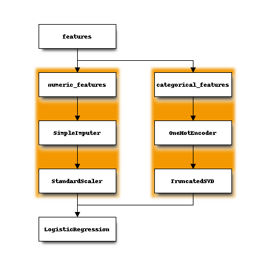

Convert pipeline¶
scikit-learn introduced ColumnTransformer useful to buil complex pipelines such as the following one:
numeric_features = [0, 1, 2] # ["vA", "vB", "vC"]
categorical_features = [3, 4] # ["vcat", "vcat2"]
classifier = LogisticRegression(C=0.01, class_weight=dict(zip([False, True], [0.2, 0.8])),
n_jobs=1, max_iter=10, solver='lbfgs', tol=1e-3)
numeric_transformer = Pipeline(steps=[
('imputer', SimpleImputer(strategy='median')),
('scaler', StandardScaler())
])
categorical_transformer = Pipeline(steps=[
('onehot', OneHotEncoder(sparse=True, handle_unknown='ignore')),
('tsvd', TruncatedSVD(n_components=1, algorithm='arpack', tol=1e-4))
])
preprocessor = ColumnTransformer(
transformers=[
('num', numeric_transformer, numeric_features),
('cat', categorical_transformer, categorical_features)
])
model = Pipeline(steps=[
('precprocessor', preprocessor),
('classifier', classifier)
])
Which we can represents as:

Once fitted, the model is converted into ONNX:
initial_type = [('numfeat', FloatTensorType([1, 3])),
('strfeat', StringTensorType([1, 2]))]
model_onnx = convert_sklearn(model, initial_types=initial_type)
It can be represented as a DOT graph:
from onnx.tools.net_drawer import GetPydotGraph, GetOpNodeProducer
pydot_graph = GetPydotGraph(model_onnx.graph, name=model_onnx.graph.name, rankdir="TP",
node_producer=GetOpNodeProducer("docstring"))
pydot_graph.write_dot("graph.dot")
import os
os.system('dot -O -Tpng graph.dot'
{kind=link}